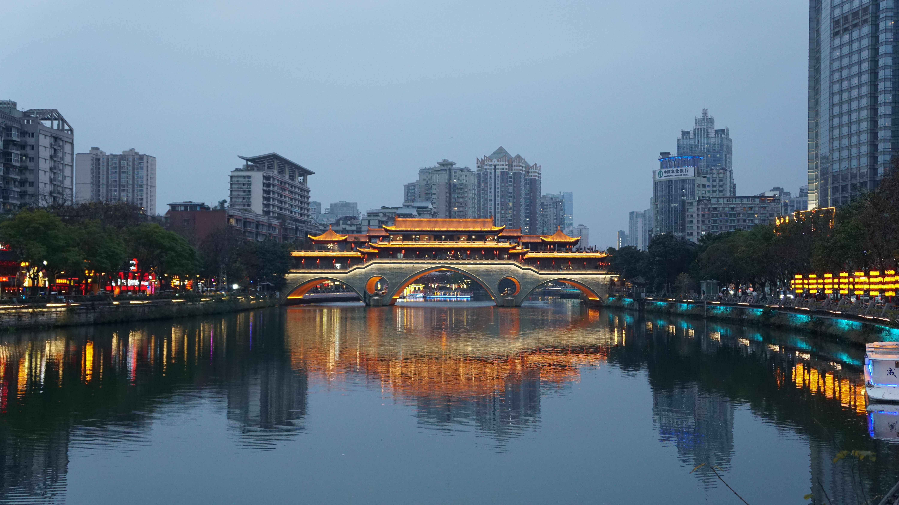

DESTINATION GUIDE

DESTINATION GUIDE
成都坐落于沃野千里的成都平原，是西部地区的重要中心城市和国际门户枢纽。古蜀文明与安逸市井相映成趣，双机场和高铁网络则让“天府之国”通达四方。
位于四川盆地西部、成都平原腹地，是西南地区重要中心城市。
亚热带湿润气候
气候温和湿润，夏季少有持续酷热，冬季较温和，云雾和阴天相对较多。
古蜀文明源远流长，都江堰的水利智慧支撑了平原发展，城市延续至今未曾中断。
川剧、茶馆与从容的市井生活保留传统脉络，现代艺术与创意产业也持续生长。
天气多阴湿，可随身备伞；市内景点分布较散，建议按片区安排行程。